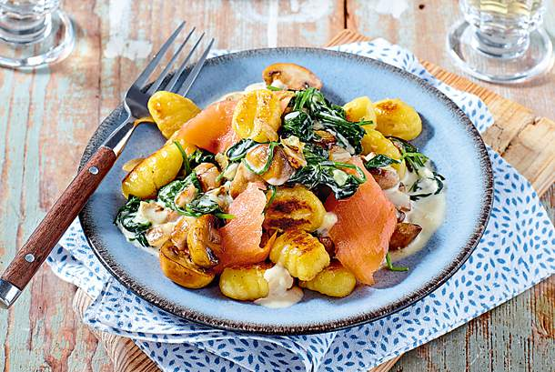

Zutaten
- 100 g getrocknete Softtomaten
- 500 g Hähnchenfilet
- 3 EL Olivenöl
- Salz, Chiliflocken
- getrockneter Oregano
- 200 g Schlagsahne
- 1 EL Hühnerbrühe (instant)
- 400 g kurze Nudeln (z. B. Penne)
- 1⁄2 Bund glatte Petersilie
- 1 Packung (125 g) Mozzarella
Zubereitung
- Tomaten halbieren. Fleisch waschen, trocken tupfen, würfeln.
- Öl in einer hohen Pfanne erhitzen. Fleisch darin rundherum anbraten. Tomaten kurz mitbraten.
Mit Salz und je 1 TL Chili und Oregano würzen. Sahne und 1 l Wasser angießen, Brühe einrühren,
aufkochen. Nudeln zufügen.
- Offen bei mittlerer Hitze ca. 15 Minuten köcheln. Ab und zu umrühren.
- Petersilie waschen, hacken. Mozzarella klein würfeln. Ca. 3 Minuten vor Ende der Garzeit
unterheben. Nochmals abschmecken. Mit Petersilie bestreut anrichten.
- Genießen!

Zutaten
- 1 rote und gelbe Paprikaschote
- 150g Kirschtomaten
- 2 rote Zwiebeln
- 500g Putenbrust
- 3 EL Öl
- Salz, Pfeffer
- 3 EL Tomatenmark
- 1/2 TL Gemüsebrühe (instant)
- 2 Pck. (à 250 g) Express-Reis Mediterran
- 100 g Feta
- 1/2 Bund Petersilie
Zubereitung
- Paprika putzen, waschen und in Streifen schneiden. Tomaten waschen und
halbieren. Die Zwiebeln schälen und grob würfeln. Fleisch waschen, trocken
tupfen und grob würfeln.
- Öl in einer großen Pfanne erhitzen. Fleisch darin rundherum kräftig anbraten.
Mit Salz und Pfeffer würzen, herausnehmen. Paprika und Zwiebeln im heißen
Bratfett ca. 2 Minuten braten. Tomatenmark zugeben, kurz anschwitzen und 200 ml
Wasser angießen. Gemüsebrühe, Reis und Fleisch unterrühren. Aufkochen und
zugedeckt ca. 5 Minuten köcheln.
- Feta zerbröckeln. Petersilie waschen, trocken schütteln, Blätter abzupfen und
grob hacken. Reispfanne abschmecken. Tomaten, Käse und Petersilie darauf
verteilen.
- Genießen!

Zutaten
- 200g junger Blattspinat
- 400g Champignons
- 5 EL Butter
- 500g Gnocchi (Kühlregal)
- 1 Zwiebel
- 1 Knoblauchzehe
- Salz, Pfeffer, Muskat
- 1 EL Mehl
- 200g Schlagsahne
- 150g geräucherter Lachs
Zubereitung
- Spinat verlesen, waschen. Pilze putzen, eventuell waschen und halbieren. 2 EL
Butter in einer Pfanne erhitzen. Gnocchi darin rundherum ca. 5 Minuten braten.
Inzwischen Zwiebel und Knoblauch schälen, fein würfeln. Gnocchi herausnehmen.
3 EL Butter im heißen Bratfett erhitzen. Pilze, Zwiebel und Knoblauch darin
anbraten. Mit Salz und Pfeffer würzen. Mit Mehl bestäuben, anschwitzen. Sahne
und 1⁄4 l Wasser zugießen, aufkochen. Spinat zugeben und in der geschlossenen
Pfanne zusammenfallen lassen.
- Lachs in Stücke zupfen. Soße mit Salz, Pfeffer und Muskat abschmecken. Gnocchi
und Lachs unterheben und kurz erwärmen.
- Genießen!